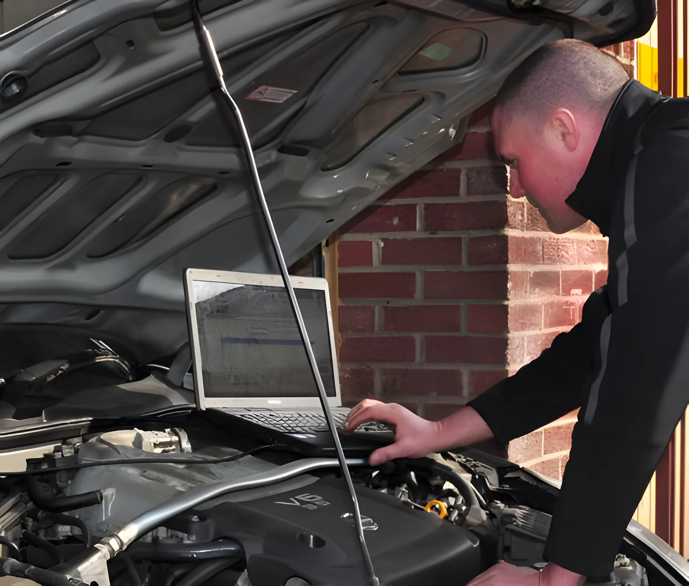
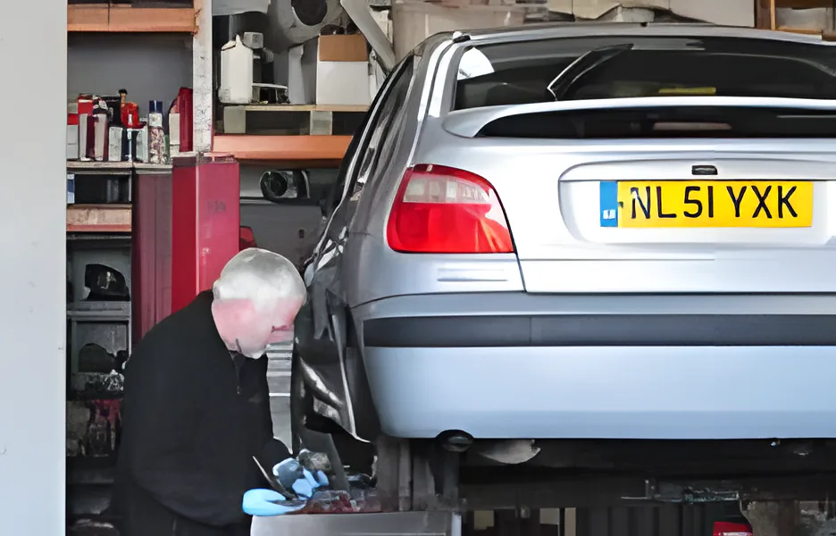
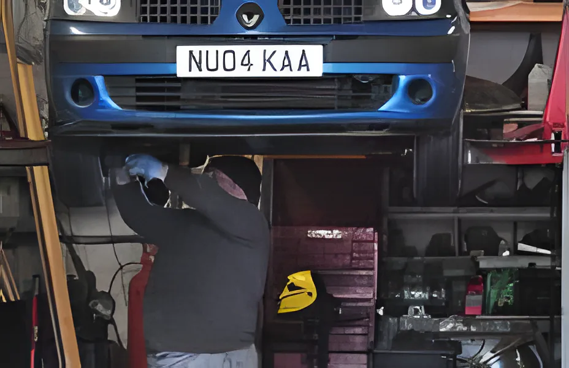
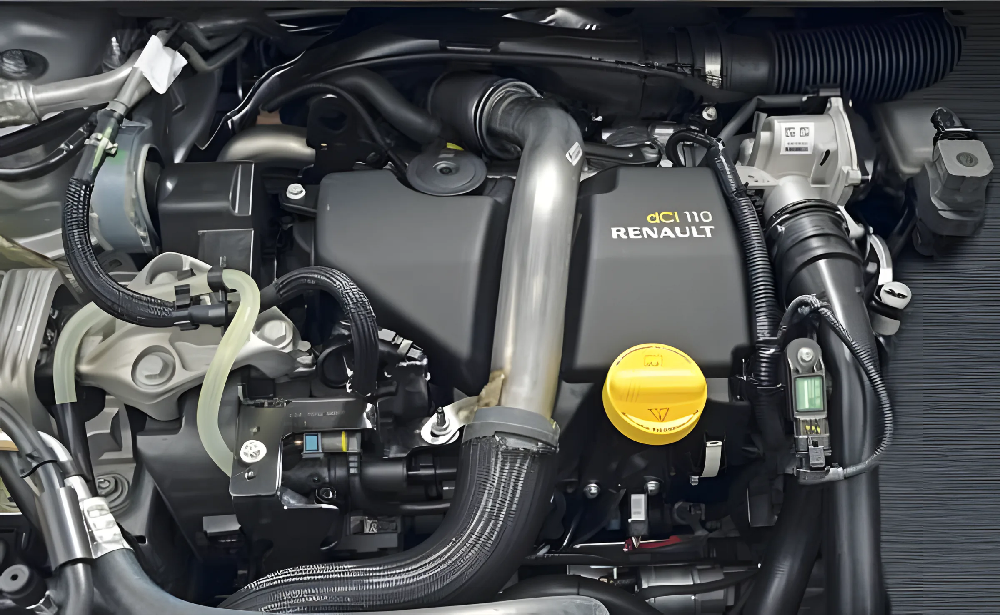
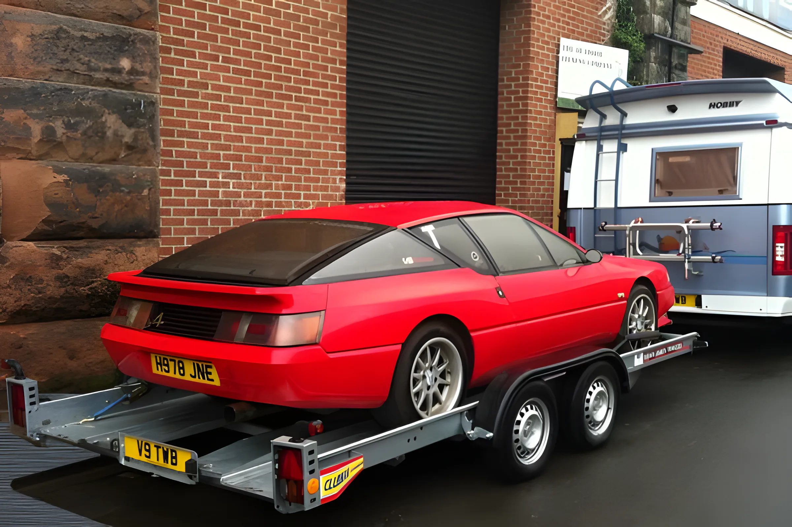
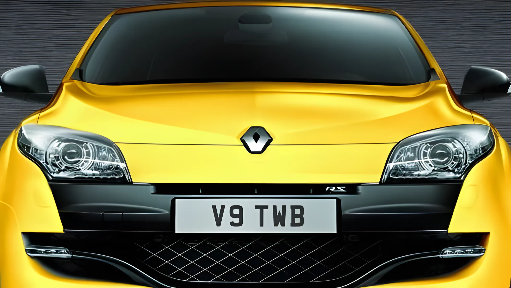
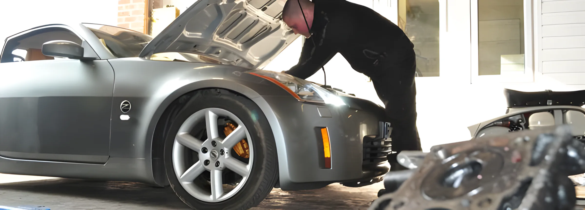
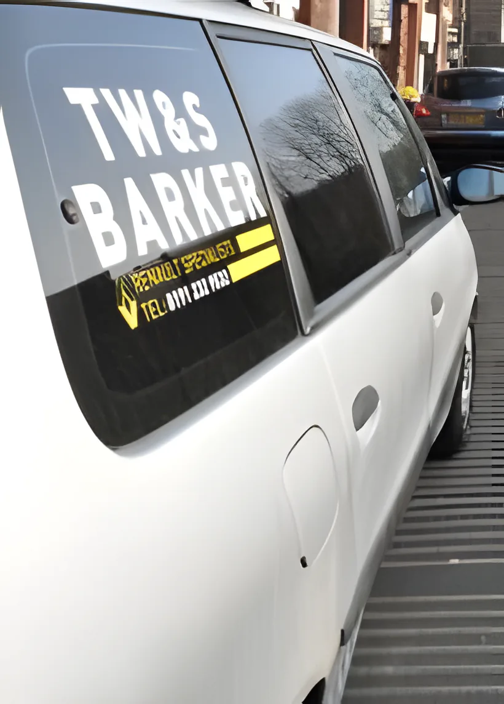

Renaultspecialists
Since 1980, Tom and Steve Barker have serviced and repaired Renaults, and every other make, on Railway Street just west of the Arena. Dealer-level diagnostics without dealer prices: servicing from £65.

16 Railway Street, NE4 7AD · Mon–Fri 9–5:30 · Email us

Dealer work, our prices
We use the same dealer-level diagnostic systems on Renault and Nissan, and genuine Renault parts. These are starting prices from our own list. Ring us for a price on your car.
- £65ServicingAll makes, new cars to the manufacturer's schedule
- £25DiagnosticsFrom code reading to full ECU calibration
- £65BrakesAdjustment and replacement
- £130Timing beltsCritical timing belt replacements
All prices are "from". See every service
What we do
Old and new, Renault or not. Cars and light commercials, with the same attention to detail.
01ServicingNew cars serviced to the manufacturer's schedule, so the warranty stays valid
- Servicing from £65
- Genuine Renault parts
- All makes and models, old and new
- Light commercials too

02Diagnostics and electricsDealer-level diagnostics on Renault and Nissan
- Diagnostics from £25
- Code reading to full ECU calibrations
- Electrical fault finding
- DPF regeneration, or removal and remapping

03MOTFull MOT pre-check and testing service
- MOT pre-check
- MOT testing service
- Any repairs done in the same workshop

04Brakes, clutches, tyresExhausts and batteries too, supplied and fitted
- Brakes from £65
- Brake and clutch adjustment and replacement
- Tyres, batteries, exhausts supplied and fitted

05Engines and air conFrom timing belts to full engine rebuilds
- Timing belts from £130
- Engine overhauls and rebuilds
- Air conditioning repair and re-gassing

06Classic RenaultsA speciality since they were "exotic" in Northumberland
- Classic Renaults a speciality
- Vehicle recovery, up to family MPV size
- Collection and return to your home


Your warranty stays valid here
Since June 2010 car makers can't make their warranty depend on servicing at an authorised dealer. Keep to the manufacturer's service schedule, keep the full service history, and your warranty stays valid.
We service new cars to that schedule with genuine Renault parts, so you don't have to use expensive authorised dealers. The saving against main dealer prices can be massive.
Regular business servicing on contract rates, and special rates for charities.
Book a warranty serviceIn the workshop
Drag or swipe through a normal week on Railway Street.



Tom, Steve, Ronnie and Jack
Tom trained with the main Renault dealer in Morpeth and set up on his own in 1980, when Renaults were still a bit of a novelty in rural Northumberland. His son Steve did four years of mechanics at Northumberland College, then brought tuning and dealer-level diagnostics into the business.
With mechanic Ronnie, and Jack the dog, they look after customers who have been coming to the arches for decades and wouldn't dream of going anywhere else.


Find us
Open nowTW & S Barker, 16 Railway Street, Newcastle upon Tyne NE4 7AD
Just west of the Utilita Arena (the old Metro Radio Arena).
| Monday | 9:00 – 5:30 |
| Tuesday | 9:00 – 5:30 |
| Wednesday | 9:00 – 5:30 |
| Thursday | 9:00 – 5:30 |
| Friday | 9:00 – 5:30 |
| Saturday | Closed |
| Sunday | Closed |
Late collections by arrangement. Just ask when you drop the car off.